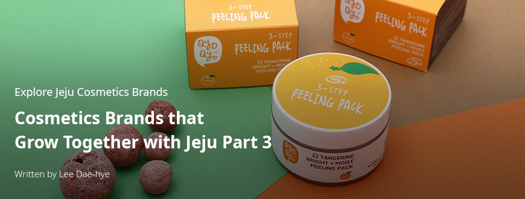
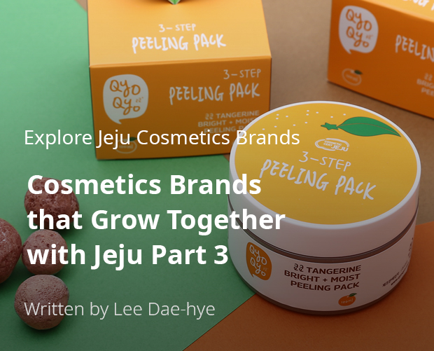
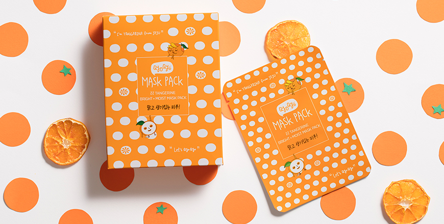
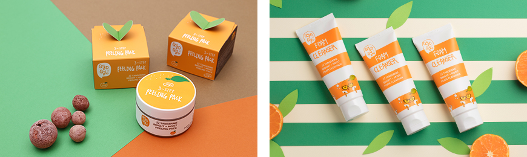
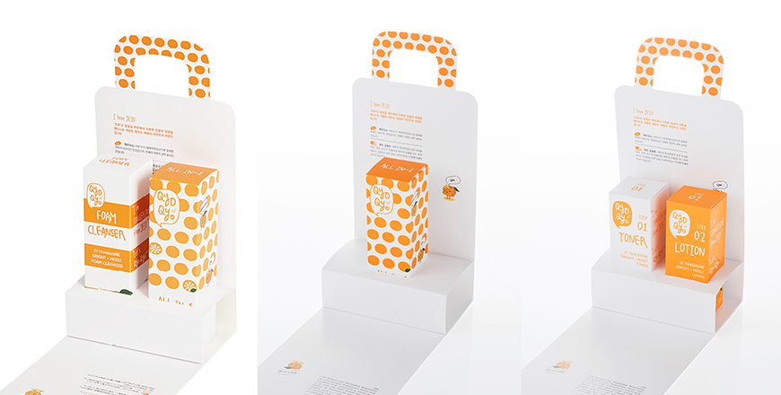

기획취재콘텐츠
- Home
- 제주라이프
- 기획취재콘텐츠
Cosmetics Brands that Grow Together with Jeju Part 3새로운 글



QyoQyo focuses on Jeju tangerines
Jeju tangerines, the primary type of produce of clean Jeju, have been re-born as cosmetics. QyoQyo, a naturalism-based cosmetics brand founded on Jeju, has developed and launched the QyoQyo skincare line, sunscreen, foam cleansing, and body products utilizing tangerine peels.
Jeju tangerines are the primary produce of Jeju. The fruits themselves are widely used in processed goods such as tangerine preserves or tangerine pies. QyoQyo focused on the tangerine as a cosmetics ingredient. Tangerines are full of Vitamin C, which means they have excellent anti-oxidation, whitening, and antibacterial effects, making them great cosmetics ingredients. In particular, Jeju tangerine peels are rich in hesperidin, which is difficult to find in other fruits and is effective in maintaining skin elasticity.
- QyoQyo Tangerine Bright+Moist Toner, QyoQyo Tangerine Bright+Moist Lotion ⓒQyoQyo -

- QyoQyo Tangerine Bright+Moist Mask Pack ⓒQyoQyo -
The QyoQyo Tangerine Skincare line adds seven flower extracts—rose, cosmos, jasmine, lily, iris, mugunghwa (Korean hibiscus), and lotus—to maximize the moisturizing effect, as well as licorice to increase the relieving effect. QyoQyo Tangerine Bright+Moist peeling pack includes volcanic clusters that help to absorb waste matter and dead skin, baby tangerines that are good for whitening, broad-leaf bamboo and aloe that add moisturizing and relieving effects, thereby satisfying cleansing, whitening, and moisturizing needs.

- (Left)QyoQyo Tangerine Bright+Moist Peeling Pack , (Right)QyoQyo Tangerine Bright+Moist Foam Cleanser ⓒQyoQyo -
Peels of Jeju tangerines are used in prescription drugs of oriental medical clinics because of their excellent anti-inflammatory, anti-oxidant, and whitening effects. QyoQyo focused on these effects of tangerine peels to develop a skincare line for women with sensitive skin.
QyoQyo has a relatively shorter history as it was founded in 2016, but 80% of the company’s products are exported and occupy the dressing tables of K-beauty fans. QyoQyo products are sold both online and offline all across the world, including in the Netherlands, Sweden, Germany, Poland, the US, China, Japan, Russia, Taipei, and Singapore. QyoQyo’s tangerine line is available at gift shops of famous hotels and resorts, like Hotel Shilla Jeju and the Kensington Hotel, as well as at duty shops at Jeju and Incheon International Airport. It is loved by travelers from both home and abroad.

- QyoQyo Tangerine Bright+Moist Gift Set ⓒQyoQyo -
The fact that our brand is from the clean island Jeju, which has won the triple crown from UNESCO, and that its concept and story begin with Jeju’s primary produce gives a fresh image to buyers around the world. Also, environmental pollution and climate change have led to people loving natural and eco-friendly ingredients and brands more. As a result of this trend, Jeju Island is receiving attention as an attractive place. The combination of naturalism, a trend in the beauty industry, and the tangerine as an ingredient has heightened people’s interest and love for the QyoQyo brand and its products.
QyoQyo, which hands down the genealogy of the K-beauty wave, will add more lines using Jeju tangerine peel extracts. Starting with the Qyoqyo Girl line targeting teenagers and those in their 20s, the company is planning to launch the QyoQyo Ms line for those in their 30s and 40s in the second half of 2020. QyoQyo has so far developed products using mostly full ripe fruits, but the company is also planning to add lines using unripened fruits (green tangerines). It also plans to develop new products using various plant-based ingredients to grow as a beauty brand that suits its keywords: naturalism and plant-based ingredients.
다음글